This page describes the "old" Firefox OS Simulator. You should only use this if you're developing apps for Firefox 1.1, and it can only be installed on Firefox 24 or Firefox 25.
If you're developing apps for Firefox OS 1.2 or later, you need to use the App Manager instead.
If you need help, try asking on the dev-developer-tools mailing list or on #devtools on irc.mozilla.org.
Summary
The Firefox OS Simulator add-on is a tool that enables you to test and debug your Firefox OS app on the desktop. The code-test-debug cycle is much faster with the simulator than with a real device, and of course, you don't need a real device in order to use it.
Essentially, the Simulator add-on consists of:
- the Simulator: this includes the Firefox OS desktop client, which is a version of the higher layers of Firefox OS that runs on your desktop. The Simulator also includes some additional emulation features that aren't in the standard Firefox OS desktop builds.
- the Dashboard: a tool hosted by the Firefox browser that enables you to start and stop the Simulator and to install, uninstall, and debug apps running in it. The Dashboard also helps you push apps to a real device, and checks app manifests for common problems.
The screenshot below shows a debugging session using the Simulator.
The Dashboard is on the top right, running inside a Firefox tab. We've added one app, a packaged app called "Where am I?". At the top left the app is running in the Simulator. We've also connected the debugging tools, which are in the panel at the bottom. You can see that the Console pane displays messages about the app.
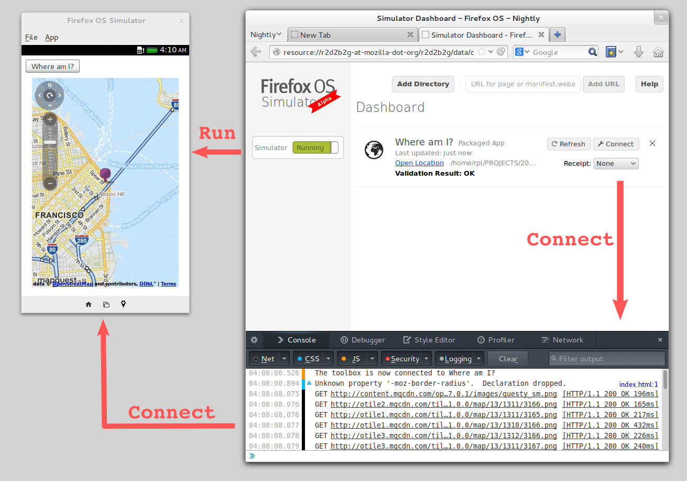
This guide covers the following topics:
- how to install the Simulator add-on
- how to add, remove, and refresh apps
- manifest validation
- how to run the Simulator
- how to connect developer tools such as the JS debugger to apps running in the Simulator
- how to get test receipts for a paid app
- how to push apps to a connected device
- the limitations of the Simulator compared with a real Firefox OS device
Installing the Simulator add-on
The Simulator is packaged and distributed as a Firefox add-on. To install it:
- Using Firefox, go to the Simulator's page on addons.mozilla.org.
- Click "Add to Firefox".
- Once the add-on has downloaded you will be prompted to install it: click "Install Now".
Because of the size of the add-on, Firefox may freeze for several seconds while installing it, and a dialog titled "Warning: Unresponsive script" may appear. If it does, click "Continue" to wait for installation to finish. This should not occur from Firefox 27 onwards.
Firefox will periodically check for newer versions of the Simulator add-on once it's installed, updating it automatically.
The Dashboard opens automatically when you install the Simulator, and you can reopen it at any time by going to the "Firefox" menu (or the "Tools" menu on OS X and Linux), then "Web Developer", then "Firefox OS Simulator":
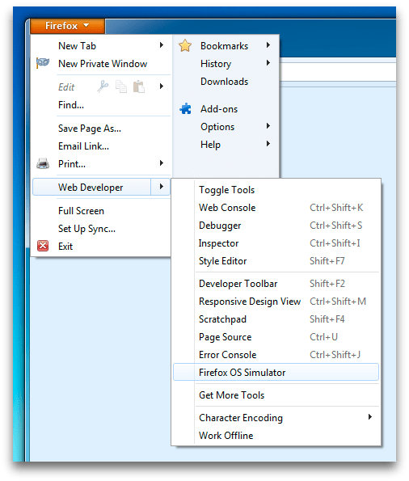
The Dashboard is the tool you use to add your app to the Simulator and run it. Here's what it looks like: 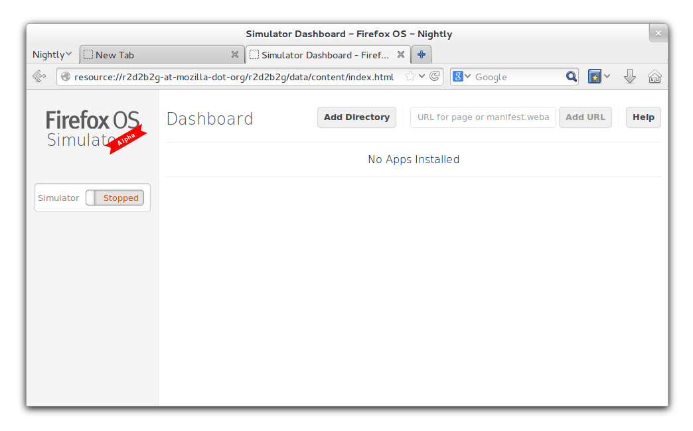
Adding, removing and refreshing apps
Adding apps
To add a packaged app to the Simulator, open the Dashboard, click "Add Directory" and select the manifest file for your app.
To add a hosted app, enter a URL in the textbox where it says "URL for page or manifest.webapp", then click "Add URL". If the URL points to a manifest, then that manifest will be used. If it doesn't, the Dashboard will generate a manifest for the URL, so you can add any website as an app just by entering its URL.
When you add an app, the Dashboard will run a series of tests on your manifest file, checking for common problems. See the section on Manifest Validation for details on what tests are run.
The Dashboard will then automatically run your app in the Simulator unless the Manifest Validation Process discovers an error in your app.
Managing apps
Once you have added an app, it will appear in the Manager's list of installed apps:
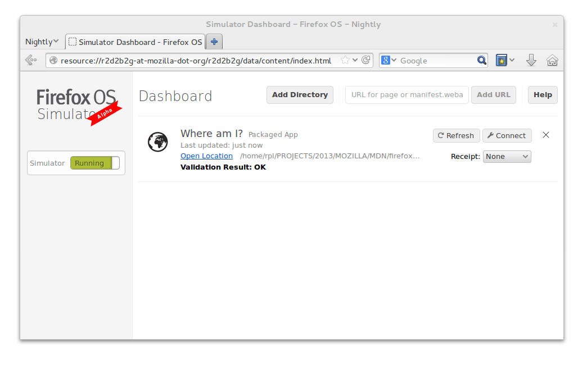
Each entry gives us the following information about the app:
- its name, taken from the manifest
- its type, which will be one of "Packaged", "Hosted", or "Generated"
- a link to its manifest file
- the result of manifest validation
It also gives us four commands:
- "Refresh": use this to update and reload the app in the Simulator after you have made changes to it. This also makes the Dashboard validate the manifest again. If you make changes to your app they will not be reflected automatically in the installed app; you will need to refresh the app to apply the changes.
- "Connect": use this to connect developer tools to the selected app. The Dashboard will start the Simulator and app if they aren't already running.
- "Remove" ("X"): use this to remove the app from the Simulator and the Dashboard. You can undo this action as long as the Dashboard tab is open.
- "Receipt": use this to test receipt verification for paid apps. After you select a type of receipt to test, the app will be reinstalled with a test receipt of the given type.
Refresh App from the Simulator window: you can update and reload an app directly from the Simulator window using the menubar action or its associated shortcut while the app is running.
Manifest validation
When you supply a manifest, the Manager will run some validation tests on it. It reports three categories of problems:
- manifest errors: problems that will prevent your app from installing or running
- manifest warnings: problems that may prevent your app from working properly
- simulator-specific warnings: features your app is using that the Simulator doesn't yet support
It summarizes the problems encountered in the entry for the app; clicking on the summary provides more details.
Manifest errors
The Dashboard will report the following conditions as errors, meaning that you won't be able to run your app in the Simulator without fixing them:
- the manifest does not include the mandatory "name" field
- the manifest is not valid JSON
- the app is a hosted app, but the type field in its manifest is "privileged" or "certified", which are only available to packaged apps
- common appCache errors (packaged apps can't use appCache, requests to the manifest URL return an HTTP redirect or an HTTP error status)
Here's the result of trying to add a manifest file with a missing "name":
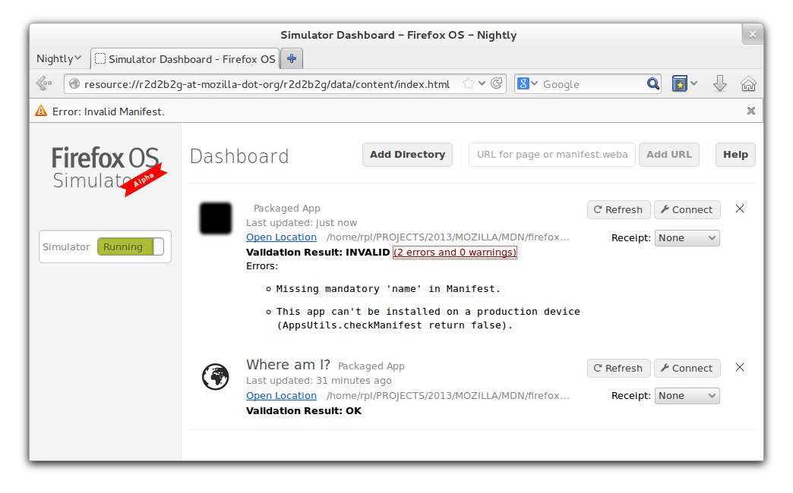
Manifest warnings
The Dashboard will report the following manifest issues as warnings:
- missing icons
- the icon is less than 128 pixels: all apps submitted to the Marketplace must have at least one icon that is at least 128 pixels square
- the type field is unrecognized
- the manifest requests a permission that is unrecognized
- the manifest requests a permission which will be denied
- the manifest requests a permission for which access could not be determined
Simulator-specific warnings
Finally, the Manager will emit warnings for apps that use features of Firefox OS not yet fully supported by the Simulator:
- the type field is "certified", but the Simulator does not yet fully support certified apps
- the manifest requests a permission to use an API that is not yet supported by the Simulator
Running the Simulator
There are two different ways the Simulator may be started:
- if you add an app or click the "Refresh" or "Connect" button next to your app's entry, the Dashboard will automatically run your app in the Simulator
- if you click the button labeled "Stopped" on the left-hand side of the Dashboard, the Simulator will boot to the Home screen and you'll need to navigate to your app
Either way, once the Simulator is running, the button labeled "Stopped" turns green and the label changes to "Running". To stop the Simulator, click this button again.
The Simulator appears as a separate window, sized so the simulated screen area is 320x480 pixels, with a toolbar at the bottom and a menubar at the top that contains some extra features:
To simulate touch events you can click the mouse button and drag while holding the button down. So by clicking and dragging right-to-left from the Home Screen, you'll see the built-in apps, as well as any apps you have added:
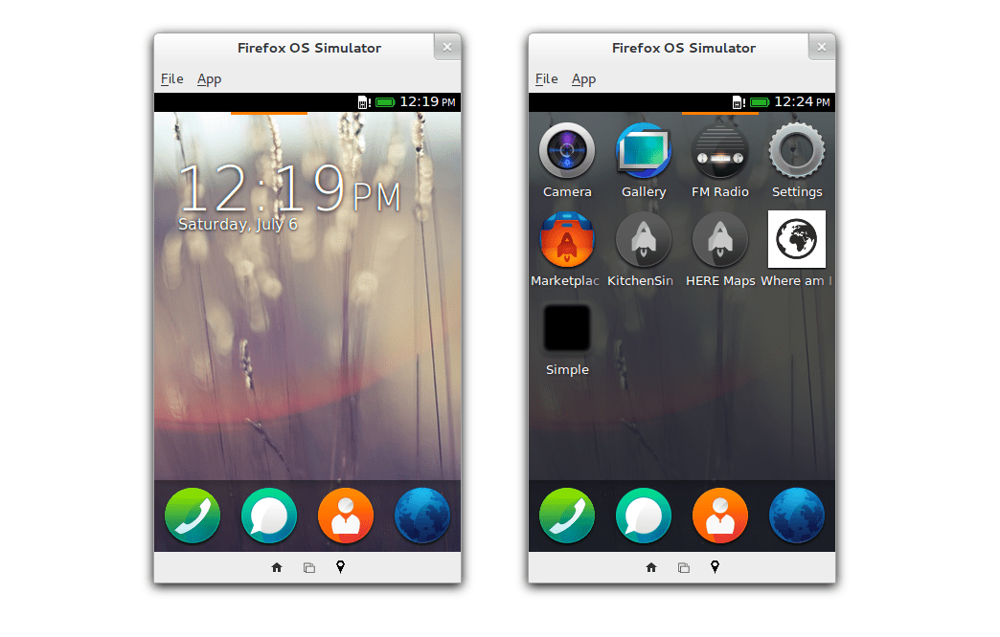
Simulator toolbar
In the bottom toolbar, from left to right, there are the Home button, the Screen Rotation button, and the Geolocation button.
- The Home button takes you to the Home screen (or to the task list if you keep it pressed for a couple of seconds).
- The Screen Rotation button switches the device between portrait and landscape orientation. This will generate the orientationchange event.
- The Geolocation button triggers a dialog asking you to share your geographic location, either using your current coordinates or supplying custom coordinates; this will be made available to your app via the Geolocation API.
{kind=link}
{kind=link}
Simulator menubar
In the top menubar, you can access some useful commands to make development more efficient:
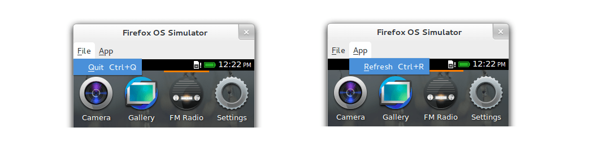
- File -> Quit (Ctrl/Cmd - Q): shut down the Simulator
- App -> Refresh (Ctrl/Cmd - R): refresh the running app
The keyboard shortcut for the "App Refresh" command makes it possible to iteratively develop an app much like a web page:
- make a change to the code (and rerun your build tool if needed, e.g., volo / yeoman / grunt)
- type the keyboard shortcut to refresh the app running in the Simulator
"Refresh App and Clear Data" hidden shortcut: sometimes it's useful to clear data that the Simulator has stored for an app, so the Simulator contains a hidden shortcut, Shift - Ctrl/Cmd - R, that will refresh the running app while clearing the following data:
-
localStorage / sessionStorage
-
cookies
-
indexedDB
-
appCache
Attaching developer tools
You can attach developer tools to the Simulator to help debug your app. At the moment you can only attach the JavaScript Debugger, the Web Console, the Style Editor, the Profiler, and the Network Monitor, but we're working on adding support for more developer tools.
Some of these tools are only available in Beta, Aurora, or Nightly builds of Firefox.
To attach developer tools to the Simulator, click the "Connect" button for an app:
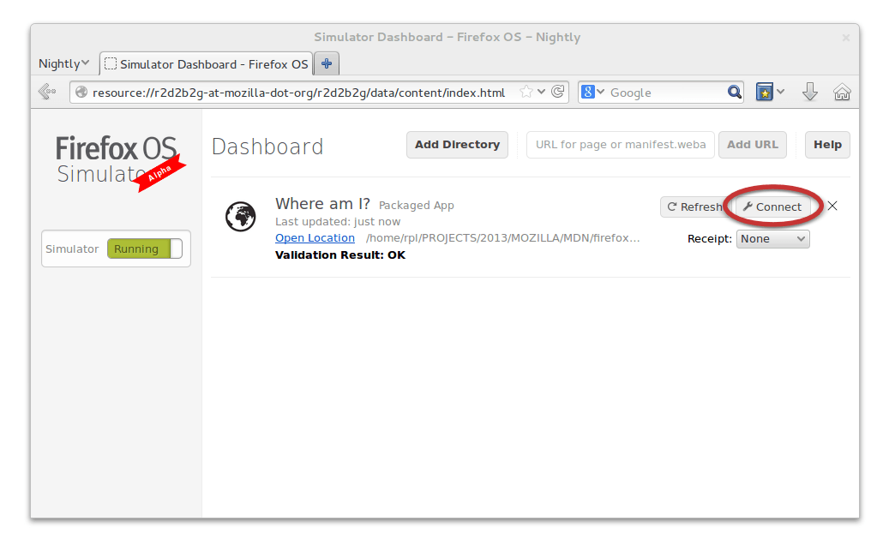
The Dashboard will then open a developer toolbox pane at the bottom of the Dashboard tab and connect it to the app:
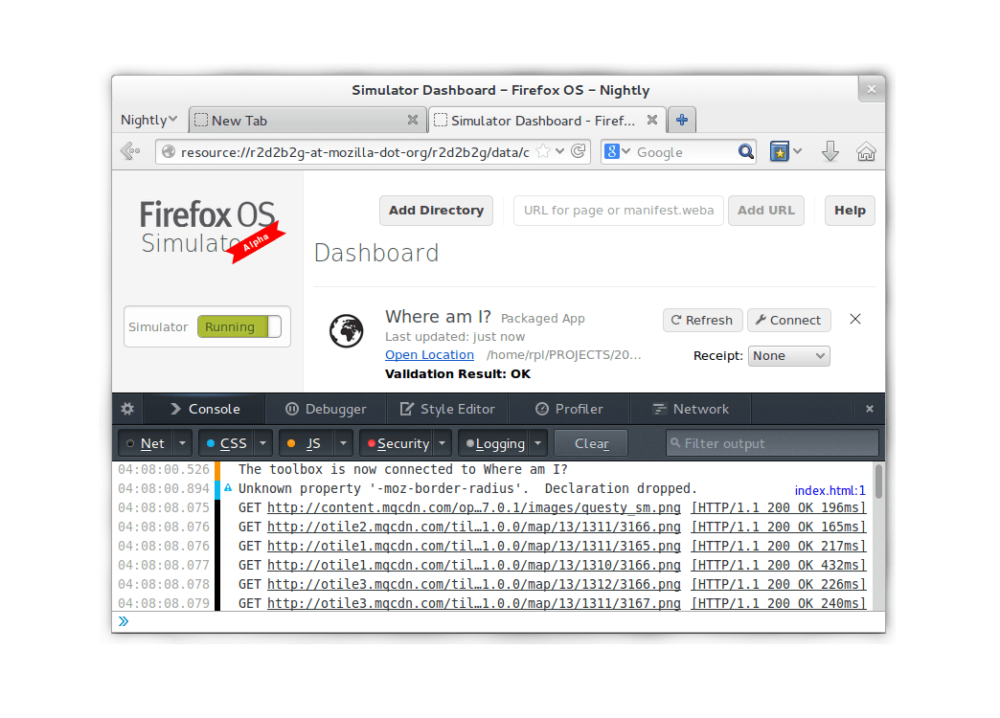
Web Console
The app can log to this console using the global console object, and it displays various other messages generated by the app: network requests, CSS and JS warnings/errors, and security errors. (Learn more about the Web Console.)
Debugger
Using the Debugger, you can step through JavaScript code that is running in the connected app, manage breakpoints, and watch expressions to track down errors and problems faster. (Learn more about the Debugger.)
Style Editor
You can view and edit CSS files referenced in the app using the connected Style Editor. Your changes will be applied to the app in real time, without needing to refresh the app. (Learn more about the Style Editor.)
Profiler
Using the Profiler tool connected to the app, you can find out where your JavaScript code is spending too much time. The Profiler periodically samples the current JavaScript call stack and compiles statistics about the samples. (Learn more about the Profiler.)
Network Monitor
Thanks to the new Network Monitor, you can analyze the status, headers, content, and timing of all the network requests initiated by the app through a friendly interface. (Learn more about the Network Monitor.)
Receipts
If you are developing a paid app, you should test your receipt validation code (e.g., the code that verifies that a user has already purchased the app or has been issued a refund and then informs the user and locks or unlocks app features accordingly) on a valid (cryptographically signed) receipt.
Thanks to the "Receipts" menu in each app entry on the Simulator Dashboard, you can install an app with a "Valid", "Invalid", or "Refunded" test receipt. Select the type of receipt you wish to test, and the Dashboard will retrieve a test receipt of that type from the Marketplace receipt service and reinstall the app with that receipt in the Simulator:
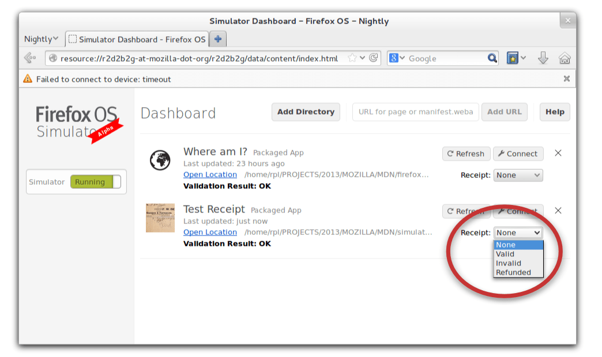
Push to device
If you have a Firefox OS device, you can connect it to the Simulator and can then push apps from the Dashboard to the device.
Connecting a device
To connect the device, follow the instructions in the guide to connecting a Firefox OS device to the desktop. Note that you don't have to install ADB, as the Simulator add-on includes it already.
Pushing apps to the device
Once you've set up the device and desktop, and connected the device to your desktop via USB, you'll see the note "Device connected" appear on the left of the Dashboard, and a new command appear in the entry for each app labeled "Push":
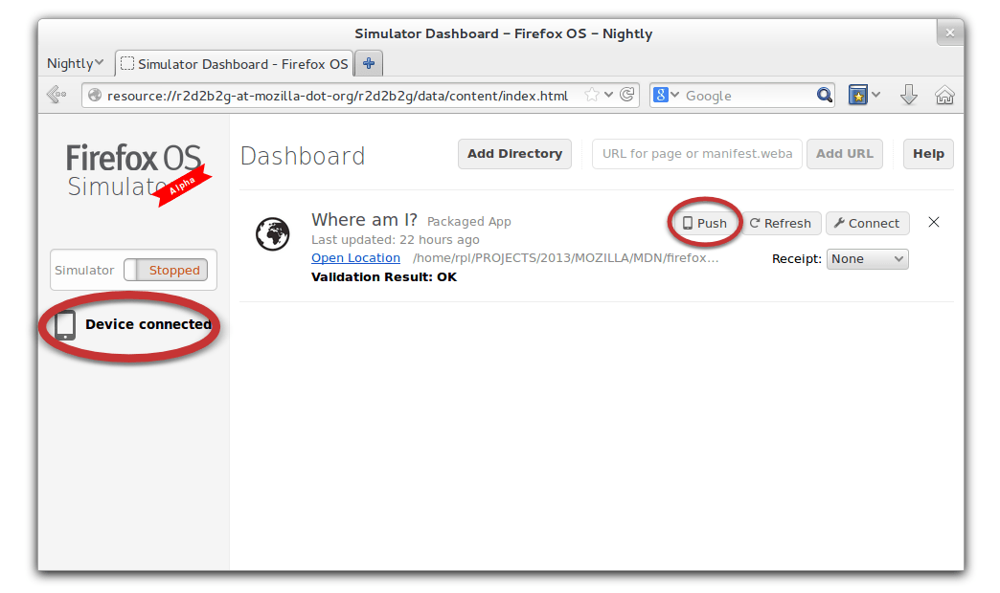
Click "Push", and the app will be installed on the Firefox OS device.
Manual Steps:
-
Once you’ve pushed the app to the device, you need to manually close and restart it again to get updated content.
-
If you update anything in the manifest (e.g., app name, orientation, type, permissions), you need to reboot the operating system for those changes to have effect.
Firefox OS Device Connection Confirmation
On every device reboot, the first "Push" request needs to be confirmed on the device:
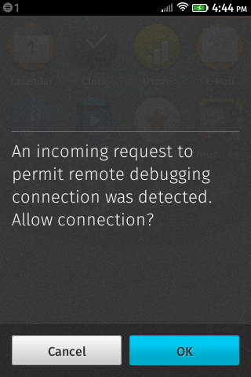
Troubleshooting on Linux
If you are unable to connect your device after creating udev rules, please see this bug.
Limitations of the Simulator
Note that the Firefox OS Simulator isn't a perfect simulation.
Hardware limitations
Apart from screen size, the Simulator does not simulate the hardware limitations of a Firefox OS device such as available memory or CPU speed.
Audio/video codecs
The following codecs depend on hardware-accelerated decoding and are therefore not yet supported:
- MP3
- AAC
- H.264 (MP4)
- WebM
This means it isn't possible to use the Simulator to test video playback in apps and on websites like YouTube that rely on these codecs.
Unsupported APIs
Certain APIs that work on the device won't work on the Simulator, generally because the supporting hardware is not available on the desktop. We've implemented simulations for some APIs such as geolocation, and expect to add more in future releases. However, at the moment the following APIs are not supported. Using them might throw errors or just return incorrect results:
- Telephony
- WebSMS
- WebBluetooth
- Ambient Light
- Proximity
- Network Information
- navigator.onLine and offline events
- Vibration
Getting help
If you have a question, try asking us on the dev-developer-tools mailing list or on #devtools on irc.mozilla.org.
How to enable verbose logging
Use about:config to create the preference extensions.r2d2b2g@mozilla.org.sdk.console.logLevel, set it to the integer value 0, and disable/reenable the add-on. Additional messages about the Simulator's operation will appear in the Error Console (or Browser Console in newer versions of Firefox).